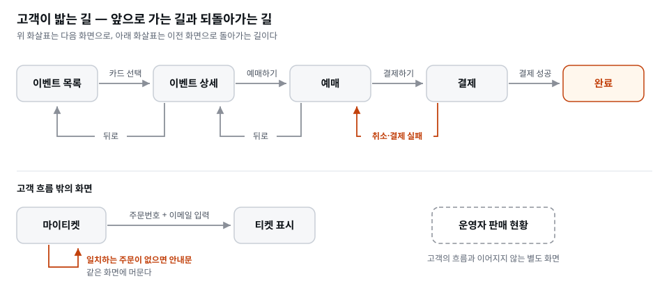

이 장을 마치면 회사의 브랜드 가이드라인(
docs/가이드/브랜드가이드라인.md)을 바탕으로 디자인 토큰 파일을 만들고, 직접 작성한 금지 목록 10줄을 반영한 UI 디자이너 스킬을 추가할 수 있다. 이 스킬로docs/PRD.md에 따른docs/화면기획서.md를 작성하고, 화면 목록·화면별 요소와 상태·화면 흐름을 검토한다. 마지막으로 온티켓 홈 화면 시안을 브라우저에서 확인한다.
역할 정의를 연습할 첫 상대로 디자이너를 고른 데는 이유가 있다. 화면은 결정의 부재가 즉시 눈에 보이는 영역이기 때문이다.
코드의 슬롭은 전문가가 아니면 안 보인다. 그러나 화면의 슬롭 — 보라-파랑 그라데이션, 둥근 카드 세 개, 이모지 아이콘 — 은 누구나 알아본다. "아, AI로 만들었구나." 그래서 디자이너 역할을 정의하는 과정에서, 결정이 결과물을 바꾸는 것을 가장 극적으로 체험할 수 있다.
여기서 '슬롭(slop)'이라는 말을 한 번 짚어 두자. 원래 '아무렇게나 쏟아 낸 죽 같은 음식', '먹다 남은 짬'을 뜻하는 단어인데, 요즘은 AI가 대량으로 찍어 낸, 어디서 본 듯 특징 없는 결과물을 가리키는 말로 굳어졌다. 화면에서 슬롭이 유독 잘 보이는 이유는, 사람이 하루에 수백 개의 화면을 보며 살아서 '흔한 것'에 대한 감각이 이미 훈련되어 있기 때문이다. 코드는 하루에 몇 개나 볼까. 그래서 코드의 흔함은 눈에 안 들어오지만, 화면의 흔함은 학생도 대표도 옆자리 동료도 0.5초 만에 알아챈다. 가장 빨리, 가장 많은 사람이 판정할 수 있는 영역 — 그래서 결정의 힘을 체감하기에 디자인이 첫 타자로 제격이다.
'중앙값'이라는 표현도 이 장의 핵심어다. AI는 세상의 수많은 웹사이트를 학습했고, 특별한 지시가 없으면 그 학습 데이터의 평균에 해당하는 화면을 내놓는다. 통계에서 가운데 값을 중앙값이라 부르듯, 아무 결정도 주지 않은 화면은 '가장 무난한 가운데'로 수렴한다. 무난한 것이 나쁜 게 아니다 — 다만 누구의 것도 아닌 화면이 된다. 온티켓을 온티켓처럼 보이게 만드는 건, 이 중앙값에서 의도적으로 벗어나는 결정들이다.
[짚고 가기] 이 장을 시작하기 전에 간단한 실험을 해 보면 좋다. Claude Code에 아무 결정도 주지 않고 "티켓 예매 사이트 홈 화면 만들어줘"만 넣어 결과를 띄워 보라. 십중팔구 보라-파랑 그라데이션에 둥근 카드에 이모지가 나온다. "어디서 봤는데" 싶어지는 그 순간이 이 장 전체의 출발점이다. 이게 바로 중앙값이고, 이 장에서 할 일은 여기서 벗어나는 결정을 언어로 적는 것이다.
"저는 디자인 감각이 없는데요"라는 걱정이 나올 차례다. 다행히 우리가 할 일은 그리는 것이 아니라 결정하고 언어로 적는 것이다. 무슨 색을 쓸지, 무슨 글꼴을 쓸지, 무엇을 금지할지. 그리는 일 — 그 결정을 픽셀로 옮기는 일 — 은 AI가 한다.
그리고 결정은 감각보다 용기의 문제에 가깝다. "오렌지색 하나만 쓴다"고 정하는 데는 미대 졸업장이 필요 없다. 정하지 않으면 중앙값이 나올 뿐이다.
이 대목을 조금 더 풀어 두면 학생의 심리적 장벽이 확 낮아진다. 디자인이라는 일은 사실 두 개의 다른 능력이 합쳐진 것이다. 하나는 '무엇이 좋은지 고르는 눈'(판단), 다른 하나는 '그것을 픽셀·선·여백으로 옮기는 손'(구현)이다. 지금까지 디자인이 어려웠던 이유는 이 둘을 한 사람이 다 해야 했기 때문이다. 손이 없으면 눈이 있어도 결과물이 안 나왔다. 그런데 이 과정에서 손은 AI가 맡는다. 그러면 우리에게 남는 건 '눈'뿐인데 — 눈은 사실 모두가 어느 정도 가지고 있다. 우리는 매일 잘 만든 앱과 못 만든 앱을 쓰면서, 좋은 화면과 나쁜 화면을 무의식적으로 구별해 왔다. 그 축적된 감각을 말로 꺼내는 것이 이 장에서 하는 일의 전부다.
비유하자면, 집을 짓는 건축주와 시공사의 관계다. 건축주는 벽돌을 쌓을 줄 몰라도 "거실은 남향으로, 천장은 높게, 조명은 따뜻한 색으로"라고 결정할 수 있다. 오히려 그 결정이 없으면 시공사는 가장 무난한 표준 주택을 짓는다. 우리는 온티켓의 건축주다. 쌓는 일은 AI가 한다. 대신 우리는 결정을 내리고, 그 결정을 시공사가 오해 없이 따를 수 있도록 문서로 남긴다 — 그 문서가 이 장에서 만들 토큰과 금지 목록과 스킬이다.
실제 회사에서는 이 결정의 상당 부분이 이미 내려져 있다. 승승장구에도 브랜드 가이드라인이 있다 — 무드, 브랜드 색, 글꼴, 말투, 이미지 규칙이 적힌 회사 문서다. 디자이너가 출근해서 첫날 하는 일은 색을 새로 고르는 것이 아니라 그 문서를 읽고, 그 결정을 화면에 쓸 수 있는 구현 값(토큰) 으로 옮기는 것이다. 이 장에서 우리가 내리는 결정은 그래서 셋이다. 토큰이 가이드라인을 제대로 옮겼는지 판정하는 것, 가이드라인 위에 얹을 우리 팀의 금지 목록을 쓰는 것, 그리고 화면기획서가 PRD를 제대로 옮겼는지 판정하는 것.
한 가지 흔한 오해를 미리 풀자. "결정을 한다"는 것이 "정답을 맞힌다"는 뜻은 아니다. 디자인 결정에는 대체로 유일한 정답이 없다. 오렌지가 정답이고 파랑이 오답인 게 아니라, 정했느냐 안 정했느냐가 갈림길이다. 오렌지로 정하고 일관되게 밀면 온티켓다운 화면이 나오고, 아무것도 안 정하면 중앙값이 나온다. 그러니 "이게 맞는 색일까"를 오래 고민하지 말고, 일단 정하고 밀어 보라고 안내하면 된다. 마음에 안 들면 토큰 값 한 줄만 바꾸면 되고, 그 비용은 뒤에서 보듯 거의 0이다.
[짚고 가기] "감각 없어요"는 이 장에서 가장 자주 떠오르는 걱정이다. 여기서 붙잡을 것은, 우리가 하는 일이 감각으로 그리는 게 아니라 결정으로 정하는 일이라는 점이다. 매일 앱을 쓰면서 이미 좋고 나쁨을 골라 왔기 때문이다. 실제로 "제일 싫어하는 웹사이트 하나만 대 보라"고 하면 누구나 하나씩 댄다. 싫은 걸 댈 수 있다는 건 이미 판단 기준이 있다는 증거다. 그 기준을 뒤집으면 그대로 금지 목록이 된다.
PM 다음으로 디자이너에게 일을 맡기는 이유가 하나 더 있다. 이 장의 디자이너는 시안만 그리지 않는다. 그보다 먼저 화면기획서 — 어떤 화면이 있고, 각 화면에 무엇이 놓이고, 화면들이 어떤 순서로 이어지는지 적은 문서 — 를 쓴다.
PRD는 글이고, 화면은 그림이다. docs/PRD.md에는 "등급과 수량을 골라 예매한다",
"매진된 등급은 예매할 수 없다" 같은 문장이 적혀 있다. 옳은 말이지만, 이 문장만으로는
정해지지 않은 것이 많다. 등급은 어떻게 나열되는가. 남은 수량을 숫자로 보여 주는가.
매진은 화면에서 어떻게 보이고, 그때 버튼은 눌리는가. 글은 두루뭉술해도 넘어가지만,
화면은 빈칸을 용납하지 않는다. 티켓 등급 한 줄을 그리려면 "이 등급은 지금 살 수
있는가, 매진인가"를 반드시 정해야 한다. 그리지 않으면 넘어갈 수 있던 결정이, 그리는
순간 강제된다. 앞에서 슬롭의 원인을 '결정의 부재'라고 했는데, 화면은 그 부재를
숨겨 둘 수 없는 형식인 셈이다.
화면을 그리면 두 가지가 저절로 드러난다.
그래서 화면기획서는 디자인 문서인 동시에 다음 단계의 입력이다. 화면에 등급별 가격이 뜬다면 데이터에는 등급과 가격이 있어야 한다. 화면에 "잔여 12장"이 뜬다면 서버는 남은 수량을 셀 수 있어야 한다. 화면을 먼저 확정해 두면, 뒤에서 데이터를 설계하는 역할과 API를 설계하는 역할이 "무엇이 필요한가"를 추측하지 않는다. 화면이 이미 요구 목록을 만들어 두었기 때문이다.
거꾸로, 화면을 건너뛰고 데이터부터 설계하면 어떻게 될까. 무엇을 보여줄지 모르는 채로 테이블(데이터를 담는 표)을 만들게 되고, 나중에 화면을 그리다가 "이 값도 필요하네", "이건 저장을 안 했네" 하며 데이터를 몇 번씩 뜯어고친다. PM 다음에 디자이너를 두고, 화면이 끝난 뒤에 데이터를 설계하는 순서에는 이런 이유가 있다.
단서를 하나 달아 둔다. 데이터가 화면에서만 나오는 것은 아니다. 이벤트·티켓 등급·주문 같은 뼈대는 서비스가 다루는 대상 자체에서 나오고, 화면기획서는 그 뼈대에 어떤 값과 어떤 상태가 필요한지를 채워 준다. 실제로는 화면 설계와 데이터 설계를 번갈아 검토하며 수정한다. 데이터를 설계하다가 화면을 다시 고치는 일도 생긴다. 이 과정에서는 학습 순서를 분명히 하기 위해 화면을 먼저 확정한 뒤 데이터 설계로 넘어간다.
[짚고 가기] "화면기획서도 결국 디자인 문서 아닌가" 싶다면 이렇게 확인해 보라. PRD의 문장 하나("매진된 등급은 예매할 수 없다")를 골라, 그 문장을 화면으로 그리려면 무엇을 더 정해야 하는지 세어 본다. 매진 표시 방법, 버튼의 동작, 남은 수량 표기 — 문장 하나에서 결정 서너 개가 나온다. 화면은 예쁘게 만드는 일이기 전에, 무엇을 보여 주고 무엇을 저장할지 드러내는 일이다.
이 장에서 처음 만나는 용어들이다. 색과 글꼴을 다루는 장이라 낯선 도구 이름이 여럿 나오는데, 지금 다 외울 필요는 없다. "이게 무엇이고 왜 쓰는지"만 잡아 두면 실습하며 자연스럽게 손에 붙는다.
색·글꼴·간격·모서리 둥글기 같은 디자인의 기본 값들에 이름을 붙여 한 파일에 모아 둔 것이다. 코드로는 보통 CSS 변수로 표현된다.
/* design/tokens.css — 온티켓 디자인 토큰 (예시) */
:root {
--color-bg: #0E0F13; /* 배경: 공연장의 어둠 */
--color-surface: #1A1C23; /* 카드 표면 */
--color-text: #F5F5F2; /* 본문 글자 */
--color-accent: #FF5C33; /* 포인트: 티켓 오렌지 — 한 곳에만 */
--font-body: 'Pretendard', sans-serif;
--space-unit: 8px; /* 모든 간격은 8의 배수 */
--radius: 10px; /* 모서리 둥글기는 이 값 하나 */
}
토큰이 곧 디자인의 기준 자료다. 화면을 만드는 쪽(AI든 사람이든)은 여기 있는 값만 쓴다.
용어 하나를 잡아 두자. 토큰(값)·컴포넌트(버튼·입력·카드처럼 토큰으로 조립한 부품)·
사용 규칙을 합쳐 디자인 시스템(design system)이라 부른다. 회사의 브랜드 가이드라인이
"브랜드를 어떻게 보여줄지"를 정하면, 디자인 시스템은 그 방향을 화면에 구현할 재료와 규칙으로 정리한다.
이 장에서는 디자인 시스템의 첫 부분인 토큰을 만든다. 컴포넌트는 어떤 화면이 필요한지가
정해진 뒤, 프론트엔드 장에서 같은 토큰으로 조립한다. 온티켓의 design/ 폴더가 그 디자인
시스템의 자리다 — 지금은 tokens.css와 금지목록.md 두 파일로 시작한다. 새 색이 필요하면 화면에 몰래 쓰는 게 아니라 토큰에
먼저 등록한다 — 이 규칙 하나로 "페이지마다 버튼 색이 다른" 사태가 사라진다.
'토큰'이라는 말은 어디서 왔나. 토큰은 원래 '증표·교환권'이라는 뜻이다.
지하철 토큰, 게임 오락실의 동전 같은 것을 떠올리면 된다. 실물이 아니라 어떤 값을
대신 가리키는 표식이라는 개념이 핵심이다. 디자인 토큰에서 --color-accent는
그 자체로 색이 아니라 "우리 서비스의 포인트 색"이라는 역할을 가리키는 이름표다.
그 이름표가 실제로 가리키는 값(#FF5C33)은 뒤에서 언제든 바꿀 수 있다. 화면 코드는
숫자 #FF5C33을 외우는 게 아니라 이름표 --color-accent만 부르므로, 이름표가
가리키는 값을 바꾸는 순간 그 이름표를 부르던 모든 화면이 동시에 바뀐다.
'CSS 변수'는 또 무엇인가. CSS는 웹 페이지의 모양(색·크기·위치)을 정하는 언어다.
변수(variable)는 프로그래밍에서 '값을 담아 두고 이름으로 꺼내 쓰는 상자'를 말한다.
그러니까 CSS 변수는 "웹 화면에서 쓸 값을 이름 붙여 담아 둔 상자"다. 위 예시의
--color-bg: #0E0F13;가 상자를 만드는 문장이고(이름은 반드시 --로 시작한다는
약속이 있다), 화면 어딘가에서 background: var(--color-bg);처럼 var(...)로 상자를
열어 꺼내 쓴다. 이 문법을 지금 외울 필요는 전혀 없다 — 코드는 AI가 쓴다. 다만
"이름을 정하면 값은 나중에 한 곳에서 갈아끼운다"는 이 구조가 왜 강력한지만
이해하면 된다.
토큰이 없는 상황을 상상하면 그 효과가 분명해진다. 토큰 없이 만든 사이트는 #FF5C33
같은 색 숫자가 화면 코드 곳곳에 흩뿌려져 있다. 페이지 40장, 버튼 200개에 같은
오렌지가 200번 손으로 적혀 있는 것이다. 그러다 "오렌지를 조금 더 붉게 바꾸자"는
결정이 나면? 200군데를 하나하나 찾아 고쳐야 하고, 그중 세 군데를 놓치면 그 세
버튼만 옛날 색으로 남는다. 토큰이 있으면 이 일은 한 줄 수정으로 끝난다.
토큰이 실무에서 쓰이는 곳:
이 사례를 조금 더 구체적으로 설명하면, 학생은 토큰이 실습에서만 쓰는 개념이 아니라 실제 기업에서도 활용하는 방식임을 이해할 수 있다.
--color-brand의 값 한 줄을 파랑에서 초록으로 바꾸고 배포하면
끝이다. 실제로 이름이 바뀌거나 인수합병으로 브랜드가 통합될 때, 토큰 기반 서비스는
하루 만에 옷을 갈아입는다.[짚고 가기] 토큰의 위력은 말보다 직접 해 보는 게 빠르다. 시안을 받은 뒤
tokens.css에서--color-accent의 오렌지 값 한 줄을 다른 색(예: 청록)으로 바꾸고 브라우저를 새로고침 해 보면, 화면의 포인트 색이 한 번에 갈린다. "방금 200군데를 한 줄로 바꿨다"는 말이 이 순간 몸으로 이해된다. 이 작은 실험은 이 장의 실습을 마친 뒤에 해 보면 가장 와닿는다.
화면의 모양을 class="p-4 text-lg" 처럼 작은 유틸리티 조각들의 조합으로
지정하는 CSS 도구다. 요즘 웹 개발의 사실상 표준 중 하나이고, AI가 화면 코드를
만들 때 특히 잘 다룬다. 토큰과의 관계: 토큰의 값들을 Tailwind 설정에 등록해 두면,
AI가 bg-accent 처럼 토큰 이름으로 화면을 조립하게 된다.
조금 더 풀어 보자. 원래 CSS는 화면 요소마다 "이 요소는 안쪽 여백 16픽셀, 글자
크기 18픽셀"처럼 규칙을 따로 적는 방식이 흔했다. Tailwind는 이 방식을 뒤집는다.
자주 쓰는 규칙들을 미리 잘게 쪼개 이름표(유틸리티 클래스)로 만들어 두고, 화면
요소에 그 이름표들을 붙이기만 하면 된다. p-4는 'padding(안쪽 여백)을 4단위만큼',
text-lg는 '글자 크기를 큼(large)으로'라는 뜻이다. 레고 블록에 비유하면, 색칠하고
자르는 대신 이미 만들어진 표준 블록을 골라 끼우는 방식이다.
'유틸리티(utility)'는 '자잘하지만 쓸모 있는 도구'라는 뜻으로, p-4·text-lg처럼
딱 한 가지 일만 하는 작은 이름표 하나하나를 가리킨다. 이 작은 것들을 여러 개 붙여
원하는 모양을 만드는 방식이라, 이 접근을 '유틸리티 우선(utility-first) CSS'라고 부른다.
왜 이 과정에서 이걸 언급하나. 두 가지 이유다. 첫째, AI가 Tailwind를 유난히 잘
쓴다. 화면 요소마다 규칙을 새로 짜내는 것보다, 이미 이름이 정해진 표준 블록을 고르는
쪽이 AI에게 훨씬 안정적이다 — 즉 결과가 덜 이상해진다. 둘째, Tailwind는 토큰과
궁합이 좋다. 우리가 정한 토큰(오렌지 색, 8의 배수 간격 등)을 Tailwind 설정에 한 번
등록해 두면, AI가 임의의 색·간격을 발명하는 대신 bg-accent처럼 우리가 허락한
이름만 골라 쓰게 만들 수 있다. 금지 목록의 "토큰에 없는 값 발명 금지" 조항을
도구 차원에서 강제하는 셈이다. 다만 이 장의 시안 단계에서는 아직 Tailwind를 쓰지
않는다 — 시안은 순수 CSS로도 충분하고, 도구를 하나라도 줄이는 편이 개념에 집중하기 좋다.
버튼·입력창·모달 같은 완성도 높은 UI 부품 모음이다. 부품을 통째로 가져다 쓰되 코드가 내 프로젝트 안으로 복사되는 방식이라 마음껏 고칠 수 있다. 토큰(테마)을 등록하면 모든 부품이 우리 브랜드 색으로 맞춰진다. 온티켓의 실제 화면을 구현할 때 이 조합(Tailwind + shadcn/ui + 토큰)을 쓴다. 이 장의 시안 단계에서는 아직 필요 없다 — 시안은 순수 HTML/CSS로 충분하다.
'UI 부품'이 무슨 뜻인지부터. UI(User Interface, 사용자 인터페이스)는 사람이 화면에서 직접 만지는 부분 — 버튼, 입력창, 체크박스, 팝업 창(모달) 같은 것들이다. 이런 것들은 서비스마다 새로 만들 필요 없이 어느 사이트나 비슷하게 쓴다. 그래서 잘 만들어진 표준 부품 모음을 가져다 쓰는 것이 합리적이다. shadcn/ui는 그런 부품 모음 중 요즘 가장 널리 쓰이는 것 중 하나다. 읽을 때는 대략 '샤드시엔 유아이'로 부른다(정해진 한글 표기는 없으니 편하게 부르면 된다).
shadcn/ui가 특이한 점 — '복사되는' 방식. 보통의 부품 라이브러리는 남의 창고에 있는 부품을 빌려 쓰는 방식이라, 그 부품의 세부 모양을 내 맘대로 바꾸기 어렵다. shadcn/ui는 반대다. 부품을 가져오면 그 코드가 내 프로젝트 폴더 안으로 복사되어 들어온다. 그때부터 그 부품은 내 것이라, 색이든 모양이든 동작이든 자유롭게 고칠 수 있다. 온티켓처럼 "어디서도 본 적 없는 우리만의 화면"을 목표로 할 때, 남의 규격에 갇히지 않고 부품을 우리가 정한 기준에 맞춰 수정할 수 있다는 것은 큰 장점이다. 그리고 여기에 토큰을 연결하면, 복사되어 온 모든 부품이 자동으로 온티켓의 오렌지·어둠·간격을 따른다.
세 도구의 관계를 한 줄로. 토큰은 '허용된 값의 목록(기준 자료)', Tailwind는 '그 값을 화면에 붙이는 이름표 방식', shadcn/ui는 '그 이름표로 이미 조립된 완성 부품'이다. 셋을 합치면, 사람이 정한 결정(토큰)이 도구를 타고 화면 구석구석까지 자동으로 퍼진다. 이 조합은 온티켓의 실제 구현 단계에서 등장하니, 지금은 "이런 팀이 뒤에 대기 중" 정도로만 알아 두면 된다.
[짚고 가기] 여기서 도구 세 개가 한꺼번에 나와 압도되기 쉽다. 하지만 지금은 하나도 설치하지 않고, 시안은 순수 HTML/CSS로 만든다는 점을 기억하면 부담이 준다. 세 도구는 실제 구현 장에서 다시 나오니, 이 장에서는 이름과 역할만 스쳐도 충분하다. "토큰=결정, Tailwind=붙이는 법, shadcn/ui=완성 부품"이라는 한 줄 요약만 챙겨 두면 된다.
화면기획서는 서비스에 어떤 화면이 있고, 화면마다 무엇이 놓이며, 화면들이 어떤 순서로 이어지는지를 글과 표로 적은 문서다. '화면설계서', '스토리보드'라고도 부른다. 시안이 화면 한 장의 모양을 정한다면, 화면기획서는 그보다 앞에서 화면 전체의 내용과 순서를 정한다. 여기서 가장 중요한 낱말이 상태(state) — 같은 요소가 상황에 따라 다르게 보이고 다르게 동작하는 것이다. 예매하기 버튼이 입력이 다 찼을 때만 눌리는 것이 상태다. 뒤의 '화면기획서에 담기는 것'에서 온티켓 예시로 자세히 본다.
실제 기능 없이 모양만 만든 화면이다. 시안 단계에서 방향을 확정하고 구현은 그다음에 한다. 순서가 주는 이득은 명확하다 — 시안을 갈아엎는 비용은 0에 가깝지만, 구현된 화면을 갈아엎는 비용은 크다.
'시안'과 '목업'이라는 말. 시안(試案)은 한자 그대로 '시험 삼아 낸 안'이다. 확정본이 아니라 "이런 방향은 어때요?" 하고 내미는 초안. 영어로는 목업(mockup)이라 하는데, mock은 '흉내 낸·가짜의'라는 뜻이다(모형 비행기를 mock-up이라 부르는 그 단어다). 즉 시안은 진짜처럼 보이지만 속은 비어 있는 화면이다. 버튼이 있어도 눌러지지 않고, 이벤트 카드가 있어도 실제 데이터가 아니라 임시로 채운 가짜다. 겉모양으로 방향만 판단하기 위한 것이라 그걸로 충분하다.
왜 굳이 시안부터 만드나 — 비용의 문제. 건물을 지을 때 설계도와 모형으로 먼저 확인하는 이유와 같다. 종이 위 설계를 고치는 건 지우개면 되지만, 다 지은 벽을 허무는 건 돈과 시간이 든다. 화면도 마찬가지다. 시안은 모양만 있는 껍데기라 "전체를 다시 짜자"고 해도 몇 분이면 다시 나온다. 그러나 데이터베이스·결제·로그인이 얽혀 진짜로 동작하는 화면을 다 만든 뒤에 "구조를 갈아엎자"고 하면, 얽힌 것들이 전부 흔들린다. 그래서 되돌리는 데 비용이 적게 드는 단계에서 방향을 확정하고 넘어가는 것이다. 이 장에서 배우는 "코드보다 시안이 먼저, 시안보다 결정이 먼저"라는 순서 감각은, 디자인뿐 아니라 어떤 만들기에도 통하는 원리다 — 바꾸기 쉬운 것부터 확정하고, 바꾸기 어려운 것을 뒤로 미룬다.
시안은 한 화면의 모습이다. 화면들이 어떻게 이어지는지를 눌러 보며 확인하는 프로토타입(prototype) 은 이 장의 홈 시안에 바로 이어서 만든다.
[짚고 가기] "시안이면 그냥 대충 만든 것 아닌가" 싶기 쉬운데, 그렇지 않다. 시안은 대충이 아니라 모양은 진지하게, 기능은 비워 둔 것이다. 방향 판단이 목적이라 모양은 최종에 가깝게 만들되, 눌러지는 버튼이나 실제 데이터 연결은 일부러 안 한다. 이 구분을 잡아 두면 시안 단계에서 "왜 버튼이 안 눌리지?" 하고 헷갈릴 일이 없다.
토큰을 만들기 전에 읽어야 할 문서가 하나 있다. docs/가이드/브랜드가이드라인.md —
(주)승승장구가 온티켓 이전에 이미 정해 둔 브랜드 수준의 결정이다. 화면을 만드는 데 사람이
정해야 하는 최소한의 결정은 딱 세 가지인데, 이 문서에 셋이 다 들어 있다.
#FF5C33. 예매 버튼과 가격, 그리고 워드마크의 마침표. 그 세 자리에만왜 하필 이 세 가지이고, 왜 각각 '하나'인가. 초심자가 디자인 앞에서 얼어붙는 가장 큰 이유는 정할 게 너무 많아 보여서다. 색만 해도 수천 가지, 글꼴도 수백 가지, 간격·그림자·모서리·애니메이션까지 생각하면 시작조차 못 한다. 그래서 결정을 극단적으로 줄인다. 이 세 가지만 정하면 나머지는 여기서 파생되거나 디자이너가 채운다. 무드는 방향을, 브랜드 색은 시선을, 글꼴은 목소리를 정한다 — 화면의 성격을 좌우하는 세 축이다.
세 결정을 하나씩 뜯어 보자.
#FF5C33은 어두운 배경 위에서 유독 튄다. 여기서 #FF5C33은 색을 컴퓨터에게
정확히 알려 주는 표기법이다 — 맨 앞 # 뒤에 빨강(FF)·초록(5C)·파랑(33)의 세기를
각각 두 자리씩 적는 방식이다. "오렌지색"이라고
말로만 하면 사람마다 다른 오렌지를 떠올리지만, #FF5C33은 세상에 단 하나뿐인 색이다.
결정을 이렇게 숫자로 못 박아 두는 것이 토큰의 정신이고, 브랜드 가이드라인은 그 첫 숫자를
이미 못 박아 두었다.여기에 원칙 하나를 얹는다. 대담함은 한 곳에만. 모든 요소가 튀면 아무것도 안 튄다. 어두운 화면 전체에서 오렌지가 단 한 군데(예매 버튼)에만 나타날 때, 그 버튼은 화면에서 가장 힘이 세진다. 가이드라인이 오렌지의 자리를 세 곳으로 못 박은 이유다. 강조가 흔해지는 순간 강조가 아니다.
가이드라인이 정하지 않은 것 — 그것이 디자이너의 첫 일이다. 문서를 끝까지 읽으면 마지막
절에 "이 문서가 정하지 않는 것"이 있다. 색의 단계(배경 위에 올릴 표면색·경계색·보조 글자색),
간격 체계, 둥글기, 글자 크기 단계. 브랜드는 "스테이지 블랙 #121212을 바탕으로, 밝기만 올려
표면을 만든다"까지만 말하고, 표면이 정확히 어떤 값인지는 말하지 않는다. 그 값을 정해
design/tokens.css에 적는 것이 UI 디자이너가 출근해서 가장 먼저 하는 일이다. 토큰은
가이드라인에서 파생되고, 가이드라인과 어긋나면 토큰이 틀린 것이다.
그래서 이 장의 '사람의 일'은 세 결정을 내리는 것이 아니라 두 가지를 판정하는 것이다. 디자이너가 만든 토큰이 가이드라인을 제대로 옮겼는가(오렌지가 강조색 하나뿐인가, 바탕이 스테이지 블랙 기준인가, 상태색이 오렌지 계열이 아닌가). 그리고 가이드라인에 없는 값을 디자이너가 지어낸 곳에 "왜 그 값인지"가 적혀 있는가. 수업에서 브랜드 가이드라인의 값을 바꿔 보고 싶으면 바꿔도 좋다 — 단, 문서를 먼저 고치고 토큰을 다시 만든다. 토큰부터 고치면 두 기준이 갈라진다.
[짚고 가기] "포인트 색을 하나만 쓰라"는 규칙은 종종 답답하게 느껴진다. 두세 개 쓰고 싶은 유혹이 크기 때문이다. 이럴 때는 반례를 나란히 보면 납득이 된다. 오렌지를 버튼·가격·제목· 아이콘 네 군데에 쓴 화면과, 버튼 하나에만 쓴 화면을 나란히 놓아 보라. 전자는 어수선하고 후자는 버튼이 '눌러 달라'고 외친다. 강조의 힘은 양이 아니라 희소성에서 나온다. 그리고 "가이드라인에 왜 표면색이 없나"를 묻는 사람이 있으면 제대로 읽은 것이다 — 브랜드 문서는 '무엇으로 보이는가'를, 토큰은 '정확히 어떤 값인가'를 정한다. 정하는 대상이 다르다.
이제 중앙값을 문서로 봉쇄한다. AI가 흔히 저지르는 '어디서 본 듯한' 선택들을 금지 목록으로 적는 것이다. 브랜드 가이드라인 8절에 회사 수준의 "하지 않는 것" 여섯 줄이 이미 있다. 금지 목록은 그 위에 얹는 우리 팀의 작업 규칙이다 — 회사 문서는 못 고치지만 이 파일은 우리가 쓰고 키운다. 시작 재료로 열 줄을 준다.
# 온티켓 디자인 금지 목록
1. 보라-파랑 그라데이션 금지
2. 이모지를 아이콘 대신 쓰지 않는다
3. 포인트 색은 예매 버튼·가격·워드마크 마침표에만 쓴다
4. 카드마다 그림자 넣지 않는다 — 구분은 배경 밝기 차이로
5. 가운데 정렬 히어로 + 큰 캐치프레이즈 구성 금지
6. 흔한 홍보용 사진(악수, 회의실, 웃는 사람들) 금지
7. "지금 바로 시작하세요" 류의 상투적 카피 금지
8. 토큰에 없는 색·글꼴·간격 값 발명 금지
9. 애니메이션은 상태 변화(호버·로딩)에만 — 장식용 움직임 금지
10. 한 화면에 글자 크기 4종류 초과 금지
왜 '해야 할 것' 목록이 아니라 '하지 말 것' 목록인가. 좋은 화면을 말로 지시하기는 어렵다 — "세련되게"가 사람마다 다르듯. 그러나 나쁜 화면의 특징은 구체적으로 짚을 수 있다. "보라-파랑 그라데이션", "이모지 아이콘"은 누구나 같은 것을 떠올린다. 그래서 방향을 '무엇을 하라'로 열어 두는 것보다, '무엇을 하지 말라'로 중앙값으로 새는 길목을 막는 것이 더 정확하고 강력하다. 금지 목록은 AI에게 넓은 자유를 주되, 흔한 함정 몇 개만 막아 두는 울타리다.
각 조항이 무엇을 막는지 몇 개만 풀어 보면, 학생이 자기 조항을 쓸 때 감이 잡힌다.
이 목록을 그대로 베끼지 말고, 최소 세 줄은 자기 것으로 바꾸는 것이 실습의 핵심이다. 방법은 간단하다 — 평소 "AI가 만들면 꼭 이러더라"라고 느꼈던 것, 싫어하는 사이트의 특징을 떠올려 한 줄씩 적는다. 잘 안 떠오르면 AI가 만든 화면을 하나 받아 놓고 거슬리는 점을 지목하면 된다.
왜 굳이 '내 것으로' 바꾸라고 하나. 남이 만든 금지 목록은 남의 취향이다. 베껴 쓰면 리뷰 때 그 조항을 기억하지 못해 위반을 잡아내지 못한다. 반대로 내가 "나는 저 반짝이는 애니메이션이 정말 싫다"는 실감에서 한 줄을 쓰면, 화면에 그게 나왔을 때 바로 눈에 걸린다. 금지 목록은 내 취향을 언어로 외부화한 것이라, 내 손으로 써야 내 눈이 그 기준으로 화면을 보게 된다.
금지 목록은 디자인 전용 기술이 아니다. 개발의 어느 단계에도 만들 수 있다.
.env 커밋 금지, '수정' 한 단어 메시지 금지, 테스트 깨진 상태로 커밋 금지"이 확장이 중요한 이유는, 금지 목록이 사실 AI에게 내 기준을 넘기는 보편적 방법이기 때문이다. AI에게 무언가를 시킬 때마다 "이러이러하게 해줘"라고 매번 길게 설명하는 대신, "이것들만은 하지 마"라는 짧은 울타리를 한 번 만들어 두면 그 뒤로 계속 지켜진다. 온티켓의 디자인에서 시작했지만, 여러분이 AI에게 반복해 시키는 어떤 일(API 구현, 스키마 변경, 코드 리뷰)에도 같은 방식을 쓸 수 있다.
그리고 금지 목록은 자란다. 앞으로 결과물에서 거슬리는 것을 발견할 때마다 한 줄씩 추가하라. 석 달 뒤의 금지 목록이 여러분의 취향 그 자체가 된다.
[짚고 가기] 이 5분이 이 장에서 가장 중요한 실습이다. 교재의 10줄을 그대로 복사하고 넘어가고 싶은 유혹이 크지만, 최소 세 줄은 지금 이 자리에서 자기 문장으로 바꿔 보는 게 핵심이다. 잘 안 떠오르면 제일 싫어하는 웹사이트 하나를 떠올려 그 사이트에서 가장 거슬리는 점 하나를 한 줄로 옮기면 된다. 이 작은 성공이 "나도 디자인 결정을 할 수 있다"는 감각으로 이어진다.
재료가 모였다. 판단 기준(무드), 금지 목록(10줄), 기준 자료(브랜드 가이드라인과 토큰).
여기에 프로세스를 더해 네 항목을 완성하면 UI 디자이너 스킬이 된다. 이 디자이너가 맡을
일은 둘이다 — docs/PRD.md를 읽고 화면기획서를 쓰는 일, 그리고 그 기획서의 화면을
시안으로 그리는 일. 순서는 언제나 기획서가 먼저다.
'스킬'이 무엇이었는지 다시 짚고 가자. 스킬은 AI에게 특정 역할과 일하는 방식을 미리 적어 둔 문서다. 사람 팀으로 치면 신입에게 건네는 '업무 매뉴얼 겸 직무 기술서'다. 매번 "너는 디자이너야, 이렇게 저렇게 일해"라고 설명하는 대신, 한 번 써 두면 그 역할이 필요할 때마다 AI가 그 문서를 따른다. 이 장에서는 그 문서를 네 항목으로 나눠 채운다 — 판단 기준, 기준 자료, 프로세스, 금지. 이 네 항목은 사실 온티켓 디자이너뿐 아니라 어떤 역할(백엔드 개발자, QA, 편집자)을 정의할 때도 그대로 쓸 수 있는 틀이다.
---
description: 온티켓의 화면기획서·화면 시안·UI를 만들 때 사용한다. 화면기획서,
화면 디자인, 시안, 페이지 만들기 요청이 오면 이 스킬을 따른다.
---
너는 (주)승승장구 온티켓의 UI 디자이너다.
## 판단 기준
- 무드: "공연장의 어둠 속에서 티켓 한 장이 빛난다"
- 티켓 서비스의 최우선은 신뢰감이다. 화려함과 부딪히면 신뢰감이 이긴다
- 대담함은 한 곳에만 — 포인트 색은 예매 버튼과 가격에만 쓴다
## 기준 자료
- 브랜드가 무엇으로 보이고 어떻게 말하는지는 docs/가이드/브랜드가이드라인.md 가 정한다.
토큰·화면·문구가 이 문서와 어긋나면 이 문서가 이긴다
- 무엇을 만들지는 docs/PRD.md 가 정한다. PRD에 없는 기능의 화면, '범위 제외'에
있는 기능의 화면은 만들지 않는다
- 어떤 화면에 무엇이 놓이는지는 docs/화면기획서.md 가 정한다
- 색·글꼴·간격·둥글기는 design/tokens.css 의 값만 사용한다. 시안은 값을 옮겨 적지 않고
tokens.css 를 링크해서 쓴다
- 새 값이 필요하면 화면에 쓰지 말고 토큰 추가를 먼저 제안한다
## 프로세스
0. design/tokens.css 가 없으면 브랜드가이드라인을 읽고 토큰부터 만든다. 가이드라인에 있는 값은
그대로, 없는 값은 무드에 맞춰 정하고 값마다 근거 주석을 붙인다
1. 시안보다 화면기획서가 먼저다. docs/화면기획서.md 가 없으면 docs/PRD.md 를 읽고
화면기획서부터 쓴다. 기획서에는 화면 목록, 화면별 요소와 상태(화면마다 보여 주는 값과
입력받는 값을 빠짐없이), 화면 흐름(되돌아가는 길까지)을 쓴다
2. 시안은 화면기획서에 있는 화면만 그린다. 기획서에 없는 요소가 필요해지면
시안에 몰래 넣지 말고 기획서 수정을 먼저 제안한다
3. 코드를 바로 만들지 않는다. 화면 구성을 글로 먼저 설명하고 승인을 받는다
4. 승인 후 구현한다
5. 결과를 내기 전에 자기비판을 한다: "다른 AI도 같은 화면을 만들겠는가?
그렇다면 실패다. 무엇이 온티켓만의 결정인지 한 줄로 답하라"
## 금지
design/금지목록.md 의 열 줄을 따른다. 목록과 충돌하는 요청을 받으면
따르기 전에 충돌을 알린다
## 경계
디자이너는 화면까지만 맡는다. 테이블·API·서버 코드는 만들지 않는다
네 항목이 각각 무슨 일을 하는지 한 번 정리해 두면, 학생이 이 틀을 다른 역할에도 옮겨 쓸 수 있다.
description 항목도 짚어 두자. 이건 AI가 "지금 이 스킬을 꺼내 써야 하나?"를 판단하는
안내문이다. "화면 디자인, 시안, 페이지 만들기 요청이 오면"처럼 어떤 요청에 발동되는지를
구체적으로 적어야, 학생이 "홈 화면 시안 만들어줘"라고 했을 때 이 디자이너가 자동으로 소환된다.
기준 자료가 네 줄로 늘어난 점도 보자. 역할 하나가 기준 자료를 여러 개 가질 수 있고,
각각 답하는 질문이 다르다 — 무엇으로 보이는가(docs/가이드/브랜드가이드라인.md), 무엇을
만드는가(docs/PRD.md), 어느 화면에 무엇이 놓이는가(docs/화면기획서.md), 어떤 값으로
그리는가(design/tokens.css). 첫 줄에 "어긋나면 이 문서가 이긴다"를 적은 이유는 기준 자료에
우선순위가 있기 때문이다. 토큰은 브랜드에서 파생된 것이라, 둘이 다투면 상위 기준인 브랜드가 이긴다. 그리고 마지막
'경계' 항목은 이 역할이 어디서 멈추는지를 적는다. 디자이너가 "이 값은 이런 테이블에
저장하면 됩니다"까지 나아가면 친절해 보이지만, 그 순간 산출물의 경계가 흐려지고 다음
역할이 무엇을 받아야 할지 모호해진다. 디자이너는 화면까지, 데이터는 그다음 역할(DBA)이
받는다.
눈여겨볼 것 두 가지. 첫째, 금지 목록을 스킬 안에 복사하지 않고 파일을 가리키게 했다 — 목록은 계속 자랄 것이므로 원본은 한 곳에만 둔다(기준 자료 원칙은 문서에도 적용된다). 둘째, 프로세스 3번이 코드부터 만드는 것을 막는다 — 시안 설명 단계가 있어야 사람이 적은 비용으로 방향을 바로잡을 수 있다.
이 두 번째 장치를 조금 더 강조할 가치가 있다. AI에게 "홈 화면 만들어줘"라고 하면 대개 곧바로 완성된 코드를 쏟아낸다. 코드가 다 나온 뒤에 방향이 틀렸음을 알면, 고치는 비용이 크다. 그래서 프로세스 3번은 AI를 일부러 한 박자 멈춰 세운다 — "먼저 화면을 어떻게 구성할지 글로 설명하고, 사람의 승인을 받은 뒤에 코드로 옮겨라." 글은 코드보다 읽기 쉽고, 글 단계에서 "카드를 6개 말고 4개로"라고 고치는 건 순식간이다. 개입 지점을 수정 비용이 가장 적게 드는 단계에 마련한다 — 이것이 이 프로세스 항목의 존재 이유다. 프로세스 1·2번도 같은 발상이다. 시안 다섯 장을 그린 뒤에 "결제 화면이 빠졌네"를 발견하는 것보다, 표 한 줄짜리 화면 목록에서 발견하는 편이 훨씬 싸다. 그래서 기획서가 시안보다 앞선다.
프로세스 5번의 '자기비판'도 이 장 특유의 장치다. AI에게 자기 결과물을 스스로 평가하게 하는 것인데, 질문이 날카롭다 — "다른 AI도 같은 화면을 만들겠는가?" 만약 그렇다면 그건 중앙값이라는 뜻이고, 온티켓만의 결정이 없다는 신호다. 사람이 매번 "이거 너무 흔한데?"라고 지적하는 대신, AI가 스스로 그 질문을 던지게 만드는 것이다.
[짚고 가기] 스킬의 네 항목을 눈앞에 그려 놓고 보면 구조가 잘 잡힌다. 특히 "판단 기준=우선순위, 기준 자료=출처, 프로세스=순서, 금지=선"이라는 한 단어 요약이 유용하다. 그리고 프로세스 3번(글 먼저, 코드 나중)이 이 장의 실습에서 실제로 작동하는지 꼭 확인해 보자 — 디자이너가 코드부터 쏟아내면 스킬이 안 먹은 것이고, 화면 구성을 글로 먼저 설명하고 멈추면 제대로 작동한 것이다. 이 대비를 직접 겪으면 스킬의 위력이 체감된다.
디자이너가 시안보다 먼저 쓸 문서를 미리 들여다보자. 화면기획서는 세 가지로 이루어진다 — 화면 목록, 화면별 요소와 상태, 화면 흐름. 문서는 AI가 쓰지만, 무엇이 담겨야 하는지를 알아야 받은 문서를 검토할 수 있다.
온티켓 첫 버전의 화면은 열 개다 — 고객 서비스 여섯, 운영 서비스 넷. docs/PRD.md의 기능 요구에서
나온 화면만 있고, '범위 제외'로 뺀 기능의 화면은 없다 — 고객 로그인 화면도, 좌석 배치도 화면도 없다.
각 화면마다 보여 주는 값과 입력받는 값을 나눠 적는 것이 핵심이다. 값의 항목은 data/의 CSV
(공연·등급·주문·입장 기록)에서 온다 — 디자이너가 항목을 지어내지 않고, 운영팀이 넘긴 데이터가 가진 항목을 화면에 올린다.
| 화면 | 하는 일 | 보여 주는 값 | 입력받는 값 |
|---|---|---|---|
| 이벤트 목록(홈) | 예매할 이벤트를 고른다 | 이벤트마다 제목·카테고리·시작일시·장소·판매상태·가장 싼 등급의 가격 | 없음 (카드를 누른다) |
| 이벤트 상세 | 이벤트를 확인하고 예매로 간다 | 제목·카테고리·시작/종료일시·장소·도시·주최·판매상태, 등급마다 등급 이름·가격·잔여 수량 | 없음 (예매하기를 누른다) |
| 예매 | 등급과 수량을 정한다 | 이벤트 제목·시작일시, 등급마다 가격·잔여 수량, 합계 금액(가격 × 수량) | 등급(하나), 수량(1~4), 이메일 |
| 결제(테스트) | 값을 치른다 | 주문 요약(이벤트 제목·등급·수량·결제금액) | 없음 (결제하기를 누른다. 카드 정보는 결제 회사의 창이 받는다) |
| 완료 | 예매가 끝났음을 알린다 | 주문번호, 이벤트 제목·시작일시·장소, 등급, 수량, 결제금액, QR 코드 | 없음 |
| 마이티켓 | 내 티켓을 다시 찾는다 | 주문 상태, 이벤트 제목·시작일시·장소, 등급, 수량, 결제금액, QR 코드 | 주문번호, 이메일 |
| 운영자 입장 | 운영 화면에 들어간다 | 없음 | 운영팀 비밀번호 |
| 운영자 공연·등급 등록 | 공연과 등급을 넣고 고친다 | 등록된 공연 목록, 공연마다 등급 이름·가격·총수량 | 공연(제목·카테고리·장소·도시·시작/종료일시·판매상태), 등급(이름·가격·총수량) |
| 운영자 입장 확인 | 현장에서 QR을 확인한다 | 판정 결과(입장 가능 / 이미 입장함 / 유효하지 않은 티켓), 이벤트 제목, 등급, 수량 | QR 코드 |
| 운영자 판매 현황 | 얼마나 팔렸는지 본다 | 이벤트마다 등급별 총수량·판매수량·잔여 수량, 판매 금액 합계 | 없음 (이벤트를 고른다) |
오른쪽 두 열을 세로로 훑어 보라. '보여 주는 값' 열을 모으면 데이터가 가지고 있어야 할 값의 목록이 되고, '입력받는 값' 열을 모으면 화면이 서버로 보내는 값의 목록이 된다. 등급·수량·이메일 세 값이 곧 주문 한 건의 재료다. 마이티켓이 입력받는 값이 아이디·비밀번호가 아니라 주문번호와 이메일인 것은, 로그인을 첫 버전에서 뺀 PRD의 범위 결정이 화면에 그대로 나타난 것이다.
'가장 싼 등급의 가격'이나 '합계 금액'처럼 저장된 값이 아니라 계산해서 나오는 값도 있다. 화면기획서는 그 구분까지 하지 않아도 된다. 화면은 "이 값이 보여야 한다"까지만 말하고, 그것을 저장할지 계산할지는 뒤에서 데이터를 설계하는 역할이 정한다.
화면에 놓인 요소 중 어떤 것은 상태를 가진다. 온티켓에서 가장 중요한 상태는 이벤트 상세와 예매 화면에 나오는 티켓 등급 한 줄이다.
티켓 등급 한 줄의 상태
판매중 — 잔여 수량이 1 이상이다. 고를 수 있다
매진 — 잔여 수량이 0이다. 고를 수 없고, 흐리게 표시하며 '매진'이라고 적는다
예매하기 버튼의 상태
비활성 — 등급·수량·이메일 중 하나라도 비어 있다. 누를 수 없다
활성 — 셋이 다 찼다. 누르면 결제 화면으로 넘어간다
상태를 적어 두는 것이 왜 중요한가. 첫째, 상태가 저장할 것과 저장하지 않을 것을 가른다. 등급이 '매진'으로 보이려면 데이터 어딘가에 "몇 장 중 몇 장이 팔렸다"가 기록되어 있어야 한다. 반면 버튼의 '비활성'은 지금 이 고객의 화면에서만 잠깐 일어나는 일이라 저장할 필요가 없다. 둘째, 적어 두지 않은 상태는 나중에 화면을 만드는 쪽이 임의로 정한다. 매진된 등급을 아예 숨길지, 흐리게 보여 줄지, 눌렀을 때 안내문을 띄울지 — 기획서에 없으면 AI가 중앙값으로 채우고, 그 임의의 결정이 데이터·API와 어긋난다.
상태는 기능이 있는 만큼만 적는다. '마감 임박' 같은 표시는 그럴듯하지만, PRD에 없는 기능이므로 상태에도 넣지 않는다. 화면기획서를 쓸 때는 요소마다 "이건 상황에 따라 달라지는가, 늘 같은가"를 묻고, 달라지는 것에만 상태를 적는다. 이벤트 카드(판매중·매진· 판매종료), 마이티켓 조회 결과(찾음·일치하는 주문 없음)도 같은 방식으로 적힌다.
마지막으로 화면들이 어떤 순서로 이어지는지를 그린다. 고객이 밟는 길이다.

흐름을 그려 보면 빠진 길이 드러난다. 등급을 잘못 골랐을 때 돌아갈 길이 있는가. 결제 화면에서 취소하거나 결제가 실패하면 어디로 가는가. 완료 화면에서 다음에 갈 곳은 어디인가. 이런 되돌아가는 길은 정상 흐름만 그리면 놓치기 쉽다. 화면마다 "여기서 나가려면 어디로 가지?"를 하나씩 물어 채운다.
나쁜 순서는 "홈 화면 예쁘게 만들어줘 → 나온 걸 보고 이러쿵저러쿵". 좋은 순서는 결정(브랜드 가이드라인·토큰·금지 목록)을 먼저 주고 그 안에서 만들게 하는 것이다. 우리는 스킬에 결정을 담았으므로 지시가 짧아진다.
이 대목이 이 장의 프롬프트 철학이다. 보통 "지시를 잘하라"고 하면 지시문을 길고 정교하게 쓰라는 뜻으로 오해한다. 그러나 여기서는 반대다 — 결정을 미리 문서로 쌓아 두었기에 매번의 지시가 짧아진다. 토큰이 색을 알고, 금지 목록이 함정을 막고, 스킬이 일하는 방식을 정해 두었으니, 이제 "홈 화면 시안 만들어줘" 한 줄이면 그 모든 결정이 자동으로 따라붙는다. 화면기획서까지 있으면 카드에 무엇을 넣을지도 다시 말할 필요가 없다. 결정을 앞에 쌓는 노력이, 뒤의 모든 지시를 가볍게 만든다. 이것이 '팀을 세운다'는 이 과정 전체의 발상이 실제로 이득이 되는 지점이다.
/designer @docs/화면기획서.md의 '이벤트 목록(홈)' 화면을 시안으로 만들어줘. design/home.html로 저장하고, 공연 카드는 data/events.csv의 공연 6개로 채워.이 짧은 지시 안에도 좋은 지시의 요소가 다 들어 있다. /designer로 역할을 소환하고,
@docs/화면기획서.md로 무엇을 그릴지의 근거를 지목하고,
design/home.html로 결과물의 위치를 못 박고, "임시 데이터 6개"로 시안임을 분명히
했다(진짜 데이터를 붙이지 말라는 뜻이다). 세 가지 모두 이번 일에만 해당하는, 사람만 아는
것이다. 무드나 색, 카드에 들어갈 값을 여기 다시 안 적은 이유는, 그것들이 이미 스킬과 토큰과
화면기획서에 들어 있기 때문이다. "tokens.css 를 링크해서 쓴다"도 마찬가지다 — 시안을 그릴
때마다 똑같이 지켜야 하는 조건이라 스킬의 기준 자료 항목이 들고 있고, 그래서 여기서는 말하지
않는다. 같은 말을 두 번 하지 않는다.
디자이너에게 주는 첫 지시는 시안이 아니라 화면기획서다.
/designer @docs/PRD.md를 바탕으로 온티켓 화면기획서를 docs/화면기획서.md에 작성해줘.뜯어 보자. @docs/PRD.md로 근거 문서를 파일 경로로 지목했다 — 앞 역할의 산출물을
다음 역할에게 넘길 때는 "아까 만든 그 문서"가 아니라 경로로 가리킨다. 이 과정 내내 쓰는
핸드오프 방식이다. 시안을 그리지 말라는 말도 없다. 디자이너 역할에 "시안과 프로토타입은 따로
요청할 때 만든다"가 적혀 있어서, 문서가 검토되기 전에 시안으로 달려가지 않는다. 실습에서는 이 한 줄에
'디자이너 결정' 절과 남길 질문의 범위를 덧붙인다.
이 지시에 없는 것을 보자. 화면기획서가 화면 목록·화면별 요소와 상태·화면 흐름으로 이루어진다는 것, 화면마다 보여 주는 값과 입력받는 값을 빠짐없이 적는다는 것, 화면 흐름에 되돌아가는 길까지 넣는다는 것, '범위 제외'에 있는 기능의 화면은 만들지 않는다는 것 — 어느 하나도 말하지 않았다. 빠뜨린 것이 아니다. 화면기획서에 무엇이 담기는지는 디자이너가 안다. 디자이너는 역할을 만들 때 그 조건을 스스로 일하는 순서에 적었고, 빠진 것은 사람이 SKILL.md를 읽고 보탰다. 화면기획서를 쓸 때마다 똑같이 필요한 조건을 매번 외워서 말해야 한다면, 그것은 지시를 잘 쓴 것이 아니라 스킬이 비어 있다는 신호다. 그럴 때는 프롬프트를 늘리지 말고 스킬에 빠진 조건을 추가한다. 받은 문서에 값의 목록이나 되돌아가는 경로가 빠져 있다면, 수정할 항목을 구체적으로 지정한다. 같은 일이 반복될 것 같으면 스킬에도 조건을 추가한다.
문서가 나오면 사람이 검토한다. 화면기획서는 AI가 썼지만, 맞는지 판정하는 것은 사람이다. 볼 곳은 세 가지다.
| 사람의 검토 | 무엇과 대조하는가 | 예 |
|---|---|---|
| PRD의 기능 요구마다 화면이 있는가 | docs/PRD.md의 기능 요구 |
판매 현황 화면이 빠지지 않았는가 |
| 범위 밖 화면이 끼어들지 않았는가 | docs/PRD.md의 '범위 제외' |
로그인·회원가입·좌석 선택 화면이 생기지 않았는가 |
| 상태가 빠진 요소는 없는가 | 요소마다 "상황에 따라 달라지는가?" | 매진일 때 버튼은? 잔여가 2장인데 수량 4를 고르면? |
빠진 것을 찾으면 "좀 더 꼼꼼하게"가 아니라, 어느 화면의 어느 요소에 어떤 상태가 빠졌는지를 집어서 고친다. 아래 '수정 지시는 고유명사로'가 문서에도 그대로 적용된다.
시안을 보고 고칠 때도 형용사를 쓰면 도돌이표가 된다.
좀 더 세련되게 ← 중앙값 재추첨. 무엇이 바뀔지 아무도 모른다
카드 사이 간격을 24px로 늘리고, 행사 제목을 한 단계 키워.
날짜와 장소는 본문색보다 한 단계 낮은 회색 토큰을 추가해서 써. ← 결정
왜 형용사가 위험한가. "세련되게", "예쁘게", "고급스럽게" 같은 형용사는 사람마다 머릿속 그림이 다르다. AI에게 형용사를 던지면 AI는 그 형용사의 평균적 해석을 다시 추첨하는데, 그게 곧 중앙값이다. "세련되게"를 열 번 시키면 열 번 다른, 그러나 다들 어디서 본 듯한 화면이 나온다. 반대로 "간격을 24px로", "제목을 한 단계 크게", "회색 토큰 추가"는 누가 읽어도 같은 결과로 이어진다. 이것이 '고유명사'의 뜻이다 — 해석의 여지가 없는, 값과 대상으로 못 박힌 지시.
형용사를 고유명사로 바꾸는 연습표를 하나 두면 학생이 감을 잡는다. 왼쪽처럼 튀어나오려는 말을, 오른쪽처럼 값으로 바꿔 말하는 훈련이다.
| 형용사(약한 지시) | 고유명사(강한 지시) | 무엇을 바꿨나 |
|---|---|---|
| 좀 더 세련되게 | 카드 사이 간격을 24px로 늘리고 그림자를 없애 | '세련'을 간격·그림자라는 값으로 |
| 제목이 좀 밋밋해 | 행사 제목을 한 단계 키우고 글꼴 두께를 SemiBold로 | 불만을 크기·두께라는 값으로 |
| 너무 칙칙한데 | 날짜·장소 글자를 본문색보다 한 단계 낮은 회색 토큰으로 | '칙칙'을 특정 요소의 색 위계로 |
| 버튼이 눈에 안 띄어 | 예매 버튼에만 포인트 오렌지를 채우고 나머지는 테두리만 | '안 띈다'를 색 대비의 배치로 |
| 좀 답답해 보여 | 카드 안쪽 여백을 16px에서 24px로 늘려 | '답답'을 여백 수치로 |
| 정신없어 보여 | 한 화면 글자 크기를 4종류 이하로 줄여 | '정신없음'을 크기 종류 수로 |
요령은 한 가지다 — 불만은 형용사로 느끼되, 지시는 대상과 값으로 옮긴다. "칙칙하다"는 느낌은 그대로 두고, "그 느낌의 원인이 무엇인가"를 한 번 더 파고들어 "날짜 글자가 본문과 같은 밝기라 위계가 없다"까지 내려가면, 지시는 저절로 고유명사가 된다.
시안이 나오면 스킬의 자기비판 질문이 작동했는지 확인한다. 시안과 함께 "다른 AI는 안 했을
결정"이 무엇이었는지 설명이 따라왔다면 작동한 것이다. 따라오지 않았을 때만 직접 묻는다 —
이 시안에서 '다른 AI는 안 했을 온티켓만의 결정' 세 가지를 대봐. 못 대는 부분은 다시 설계해처럼.
이 질문이 효과적인 이유는, AI가 시안을 만들고 그 결과까지 스스로 검토하게 하기 때문이다. 보통 만든 사람은 자기 결과물을 좋게 보기 마련인데, "다른 AI는 안 했을 결정을 대봐"라고 물으면 AI가 자기 화면을 냉정하게 뜯어봐야 한다. 세 가지를 시원하게 대면 온티켓만의 결정이 실제로 들어간 것이고, 우물쭈물하면 그 부분이 중앙값이라는 뜻이다. 사람이 일일이 "이거 흔한데?"를 짚는 대신, AI가 근거를 설명하면서 차별화가 부족한 부분을 찾게 하는 것이다. 이 "근거를 스스로 대게 하는" 기법은 디자인 밖에서도 통한다 — 글, 기획, 코드 어디서든 "왜 이렇게 했는지 세 가지 이유를 대봐"는 결과물의 완성도를 끌어올린다.
[짚고 가기] 두 가지 지시 유형(짧은 시안 지시 / 고유명사 수정)을 실제로 한 번씩 쳐 보면 이 절이 살아난다. 자기비판은 따로 치지 않고, 스킬이 했는지를 확인한다. 특히 "좀 더 세련되게"와 "간격 24px, 그림자 제거"를 같은 시안에 각각 날려 결과를 비교해 보면, 형용사와 고유명사의 차이가 눈으로 확인된다. "세련되게"의 결과에 실망하게 되는 그 순간이 이 절이 노리는 지점이다.
docs/가이드/브랜드가이드라인.md를 열어 끝까지 읽는다. 읽으면서 세 가지를 찾아 메모한다 —
무드 한 줄, 브랜드 색과 그 색이 허락된 자리, 글꼴. 그리고 마지막 절 "이 문서가 정하지 않는 것"에
무엇이 적혀 있는지 본다. 그것이 다음 단계에서 디자이너가 채울 빈칸이다.
이 3분이 '사람의 일'이 시작되는 자리다. 색을 고르는 것이 아니라 회사가 내린 결정을 읽고, 무엇이 정해졌고 무엇이 비어 있는지 가르는 일이다. 수업에서 가이드라인의 값을 바꿔 보고 싶으면 바꿔도 좋다 — 단, 이 파일을 먼저 고친다. 토큰은 여기서 파생되기 때문이다.
디자이너 역할을 스킬로 만든다. 사람이 말하는 것은 세 가지다. 무엇을 맡는지, 무엇을 기준으로 삼는지, 어디까지 하는지.
'UI 디자이너' 스킬을 만들어줘. 이름은 designer로 해.docs/PRD.md와 docs/가이드/브랜드가이드라인.md를 기준으로design/tokens.css 을 만들고화면기획서(docs/화면기획서.md)를 쓰고,그 화면을 시안과 클릭 프로토타입으로 만든다.시안과 프로토타입은 따로 요청할 때 만든다.화면까지만 맡고, 테이블·API·서버 코드는 만들지 않는다.위 프롬프트를 그대로 복사해 입력하면 된다. 다른 내용으로 바꿔서 해 보고 싶다면 자유롭게 바꿔도 좋다.
/ 를 눌러 designer가 목록에 있는지 확인한다.
줄마다 이유가 있다.
/designer에게 토큰을 맡긴다. 화면기획서보다 먼저 적은
것은 일하는 순서도 그렇기 때문이다 — 브랜드에서 토큰이 나오고, 토큰으로 화면을 그린다.무드("공연장의 어둠 속에서 티켓 한 장이 빛난다"), 신뢰감이 먼저라는 판단 기준, 포인트 색을 예매 버튼과 가격에만 쓴다는 규칙은 적지 않았다. 브랜드 가이드라인 1절과 2절에 이미 있고, 디자이너는 그 문서를 기준으로 삼는다. 판단 기준·일하는 순서·금지 같은 역할 정의의 항목도 사람이 채우지 않는다. 디자이너가 가이드라인과 문서를 읽고 채운다. 사람은 만들어진 SKILL.md를 읽고 빠진 것만 보탠다.
생성된 .claude/skills/designer/SKILL.md를 열어 다음이 들어갔는지 본다.
tokens.css의 값만 쓰고, 시안은 tokens.css를 링크해서 쓴다. 값을 옮겨 적지 않는다빠진 것이 있으면 그 자리에서 한 줄로 보태게 한다. 예를 들어 "기획서에 없는 요소가 필요하면 기획서 수정을 먼저 제안하도록 추가해줘"라고 한다. 뒤의 화면기획서 지시와 시안 지시가 짧은 것은 이 파일에 기대기 때문이다.
방금 만든 디자이너의 첫 일이다. 화면에 쓸 색·글꼴·간격을 정하는 일은 디자이너의 몫이다.
/designer @docs/가이드/브랜드가이드라인.md 를 근거로 design/tokens.css 를 만들어줘.가이드라인에 값이 있는 것은 그대로 쓰고,가이드라인이 정하지 않은 것은무드에 맞춰 네가 정해. 값마다 가이드라인의 어느 조항에서 나왔는지, 아니면 왜 그 값인지 주석을 붙여줘.위 프롬프트를 그대로 복사해 입력하면 된다. 다른 내용으로 바꿔서 해 보고 싶다면 자유롭게 바꿔도 좋다.
생성된 파일을 열어 읽는다. 판정할 것은 넷이다.
#121212 기준이고, 표면·경계가 거기서 밝기만 올린 값인가'주석'은 코드 안에 사람이 읽으라고 적어 두는 설명 글로, 컴퓨터는 무시하고 사람만 읽는다. "어느 조항에서 나왔는지 주석을 붙여줘"라고 지시한 이유가 여기 있다 — 토큰 파일은 색 목록이 아니라 브랜드 결정을 구현 값으로 옮긴 기록이다. 조항 번호가 붙은 값은 회사가 정한 것이고, '왜'만 붙은 값은 디자이너가 정한 것이다. 그 경계가 파일 안에 남는다.
프롬프트에 토큰의 종류를 적지 않은 이유도 보자. 브랜드 색과 글꼴처럼 가이드라인에 있는 값은 AI가 가이드라인을 읽고 찾는다. 표면·경계 색의 단계, 상태색, 간격, 둥글기, 글자 크기처럼 무엇을 토큰으로 둘지는 디자이너의 일이다. 사람은 가이드라인을 가리키고, 회사가 정한 값과 디자이너가 정할 값을 가르는 기준만 준다. 어떤 토큰이 생겼는지는 위 네 가지 판정과 주석으로 검토한다. 꼭 있어야 할 종류가 빠졌으면 그때 한 줄로 보태게 한다. 예를 들어 "상태색이 없어. 성공·오류·경고를 추가해줘"라고 한다.
[짚고 가기] 생성된 tokens.css를 그냥 지나치지 말자. 주석을 소리 내어 읽어 보면 AI가 가이드라인을 제대로 읽었는지 드러난다. 가끔 AI가 "강조색의 밝은 변형"이라며 오렌지를 두세 단계로 늘려 놓는데, 그건 가이드라인 2절("강조색은 한 곳에만")과 어긋난다. 그걸 잡아내는 것이 이 단계의 검증이다. 토큰이 브랜드와 다투면 토큰이 진다.
아래 10줄이 출발점이다. 그대로 복사해 design/금지목록.md 파일로 저장한다.
(VS Code 왼쪽 탐색기에서 design 폴더를 오른쪽 클릭 → 새 파일 → 이름에 금지목록.md 입력 →
붙여넣고 저장.)
# 온티켓 디자인 금지 목록 1. 보라-파랑 그라데이션 금지2. 이모지를 아이콘 대신 쓰지 않는다3. 포인트 색을 예매 버튼·가격·워드마크 마침표 밖에 쓰지 않는다4. 카드마다 그림자 넣지 않는다 — 구분은 배경 밝기 차이로5. 가운데 정렬 히어로 + 큰 캐치프레이즈 구성 금지6. 흔한 홍보용 사진(악수, 회의실, 웃는 사람들) 금지7. "지금 바로 시작하세요" 류의 상투적 카피 금지8. 토큰에 없는 색·글꼴·간격 값 발명 금지9. 애니메이션은 상태 변화(호버·로딩)에만 — 장식용 움직임 금지10. 한 화면에 글자 크기 4종류 초과 금지저장했으면 여기서부터가 진짜 실습이다. 최소 세 줄을 지우고 내 것으로 바꿔 쓴다. 이 세 줄만큼은 복사하지 말고 직접 타이핑한다 — 손으로 쓴 금지가 기억에 남고, 기억에 남아야 리뷰 때 잡아낼 수 있다. 브랜드 가이드라인 8절과 겹치는 줄(1·4·5·6·7)은 지워도 된다 — 회사 문서가 이미 막고 있다. 그 자리에 내 것을 넣으면 된다.
이 장에서 유일하게 "AI에게 시키지 말고 직접 쓰라"고 권하는 파일이다. 출발점 10줄은 복사해도 되지만, 바꿔 쓰는 세 줄은 AI에게 맡기지 않는다. 금지 목록은 내 취향을 언어로 만드는 일이라 남(AI 포함)이 대신 쓰면 내 것이 되지 않기 때문이다. 세 줄이 안 떠오르면 지금 브라우저에서 아무 사이트나 열어 거슬리는 점 세 개를 찾아 뒤집어 적으면 된다.
[잠깐]
docs/PRD.md가 있어야 한다. 화면기획서는 PRD를 근거로 쓴다. PM 스킬로 만든 PRD에 '범위 제외' 절까지 확정되어 있는지 먼저 확인한다.
다음 프롬프트를 입력한다.
/designer @docs/PRD.md를 바탕으로 온티켓 화면기획서를 docs/화면기획서.md에 작성해줘.PRD에 없는 화면 결정은 네가 정하고 '디자이너 결정' 절에 이유와 함께 모아 적어. 질문은 PRD를 바꿔야 하거나 데이터·서버가 정할 것만 남겨.위 프롬프트를 그대로 복사해 입력하면 된다.
둘째 줄이 이 지시의 핵심이다. 이 줄 없이 보내면 디자이너는 매번 같은 질문 열 개쯤을 미결로 남기고 멈춘다 — 지난 공연을 홈에 보이나, 결제수단을 보여 주나, 취소된 주문을 조회하면 무엇을 보이나, 게이트는 무엇 중에서 고르나, 다른 공연 티켓을 찍으면 거절하나. 전부 PRD에 없는 것들이다. 그렇다고 사람이 이 답을 프롬프트에 미리 다 적으면 화면기획을 사람이 하고 AI는 받아 적는 꼴이 된다. 그러면 디자이너에게 맡길 이유가 없다. 그래서 정하는 것은 디자이너, 판정하는 것은 사람으로 가른다. 디자이너가 먼저 정해 '디자이너 결정' 절에 이유와 함께 모아 두면, 사람은 그 목록을 읽고 동의하지 않는 것만 고친다. 질문에는 화면이 정할 수 없는 것 — PRD를 바꿔야 하는 것과 데이터·서버가 정할 사항 — 만 남는다.
시안을 그리지 말라는 말은 적지 않았다. 디자이너 역할에 "시안과 프로토타입은 따로 요청할 때 만든다"가 이미 있다.
화면을 몇 개로 나누는지도 디자이너에게 맡긴다. 같은 PRD로도 상세·예매·결제를 한 화면에 합치기도 하고 넷으로 나누기도 한다. 어느 쪽도 틀리지 않다. 앞의 '화면기획서에 담기는 것'에서 본 열 개와 다르게 나왔으면 '디자이너 결정' 절에서 왜 그렇게 나눴는지 이유를 읽고, 뒤 장에서 화면마다 주소를 하나씩 주므로 합친 것은 나누게 한다.
docs/화면기획서.md를 열어 다음 항목을 직접 검토한다. PRD를 옆에 띄워 놓고 대조한다.
data/ CSV의 항목과 맞는가 — 공연에 '별점'이나 '찜 수'처럼 데이터에 없는 항목이 생기지 않았는가여기서 AI가 한 일과 사람이 한 일을 갈라 두자. 문서를 쓴 것은 AI다. PRD의 문장을 화면 열 개와 값의 목록으로 옮기는 일은 AI가 몇 분이면 한다. 맞는지 판정한 것은 사람이다. AI는 그럴듯한 화면을 덧붙이는 쪽으로 기운다 — 티켓 예매 사이트라면 으레 있는 로그인 화면, '마감 임박' 표시 같은 것들이다. 그것이 우리 PRD의 범위 밖이라는 사실은, 범위를 결정한 사람만 안다.
검토가 끝나면 화면기획서를 확정한다. 화면기획서도 PRD처럼 뒤 단계가 근거로 삼는 문서다. 데이터를 설계하는 역할과 API를 설계하는 역할이 이 문서를 읽고 일한다. 시안을 눌러 보면 화면기획서는 다시 바뀐다. 그래서 확정할 때 버전을 붙이고, 바뀔 때마다 버전을 올리며 변경 이력을 남긴다. 뒤 단계가 어느 판을 보고 일했는지 알 수 있어야 문서끼리 어긋났을 때 원인을 찾는다.
화면기획서 검토 끝났어. 질문 중 PM이 정할 것은 /pm이 정해서 PRD에 반영하고 디자이너에게 알려줘.디자이너가 그 결정을 화면기획서에 반영한 다음 상태를 확정해.검토에서 고칠 것이 나왔다면 "검토 끝났어." 뒤에 고칠 내용을 고유명사로 한 줄씩 적는다. 예를 들면 이렇다.
화면기획서 검토 끝났어. 홈에 판매종료 공연도 보이게 했는데 판매중·매진만 보이게 고치고, 상태를 확정해.
PRD를 바꿔야 하는 질문은 사람이 답하지 않고 PM에게 넘긴다. 무엇을 만들지는 PM이 정하는 일이라, PM이 정해 PRD에 반영하고 그 결정을 디자이너가 화면기획서에 옮긴 뒤 확정한다. 그래야 PRD와 화면기획서가 같은 결정을 담는다. 화면이 정할 수 있는 질문은 앞에서 디자이너에게 돌려보냈으므로 여기에는 남지 않는다.
문서를 다시 열어 세 가지를 확인한다. 머리에 상태 '확정'과 버전 1.0이 있는가. 변경 이력이 한 줄 늘었는가. 데이터·서버가 정할 질문이 지워지지 않고 남아 있는가. 화면기획서에는 PRD처럼 버전 규칙을 적은 템플릿이 없어서, AI가 상태만 바꾸고 버전을 빼먹기도 한다. 그러면 "버전을 1.0으로 붙이고 변경 이력에 한 줄 적어줘"라고 한 줄 더 보낸다. 질문까지 지워 버렸으면 "데이터·서버가 정할 질문은 되살려줘"라고 한다. 확정한 뒤에 화면기획서를 고칠 때는 "버전을 1.1로 올리고 변경 이력에 한 줄 적어줘"를 함께 말한다.
[짚고 가기] 예측을 하나 하고 문서를 열면 검토가 날카로워진다. 열기 전에 "화면이 몇 개 나올까, 입력받는 값은 전부 몇 개일까"를 적어 두고, 실제와 비교한다. 화면 수가 예측보다 많으면 범위 밖 화면이 끼어든 것은 아닌지, 입력값이 많으면 PRD에 없는 값(전화번호, 이름)을 AI가 지어낸 것은 아닌지 확인한다. 입력받는 값은 하나하나가 뒤에서 저장할 자리를 요구하므로, 여기서 하나를 잘못 받아들이면 그 뒤의 문서가 모두 그 값을 끌고 간다.
다음 프롬프트를 입력한다.
/designer @docs/화면기획서.md의 '이벤트 목록(홈)' 화면을 시안으로 만들어줘. design/home.html로 저장하고, 공연 카드는 data/events.csv의 공연 6개로 채워.위 프롬프트를 그대로 복사해 입력하면 된다. 다른 내용으로 바꿔서 해 보고 싶다면 자유롭게 바꿔도 좋다.
화면기획서에는 화면이 여럿인데 왜 홈 하나만 먼저 만드나. 첫 시안은 토큰·금지 목록·스킬이 제대로 작동하는지 보는 시험대이기 때문이다. 여기서 어긋난 것을 바로잡은 뒤 나머지를 한꺼번에 만드는 편이, 열 화면을 다 뽑아 놓고 같은 문제를 열 번 고치는 것보다 싸다.
이때 프로세스가 작동하는지를 본다 — 디자이너가 코드부터 쏟아내는가, 아니면 화면 구성 설명을 먼저 하고 멈추는가. 설명을 읽고 마음에 들면 승인, 아니면 설명 단계에서 고친다. (코드가 나오기 전에 고치는 것, 이게 프로세스 항목이 존재하는 이유다.)
여기가 이 장의 하이라이트다. 디자이너가 코드 대신 "홈 화면은 상단에 로고, 아래에 이벤트 카드 6개를 2열로 배치하고, 각 카드에는 화면기획서대로 제목·카테고리·일시·장소· 판매상태·가격을 넣겠습니다. 포인트 오렌지는 예매 버튼과 가격에만 씁니다"처럼 글로 먼저 설명하고 멈추면 스킬이 제대로 작동한 것이다. 이 설명 단계에서 "카드는 4개로", "2열 말고 3열로"라고 고치는 건 몇 초면 된다. 코드가 다 나온 뒤 고치는 것과 비교하면 비용이 수십 분의 일이다.
[짚고 가기] 이 단계에서 스킬이 안 먹어 디자이너가 코드부터 쏟아내는 경우가 있다. 당황할 것 없이 "화면 구성을 글로 먼저 설명하고 승인받은 뒤 구현하라"고 다시 지시하면 된다. 이 실패 자체가 좋은 교보재다 — 스킬이 있을 때와 없을 때(혹은 무시됐을 때)의 차이를 견줘 보면, 프로세스 항목이 왜 필요한지 체감할 수 있다.
design/home.html을 브라우저로 연다. 확인할 것:
docs/화면기획서.md의 '이벤트 목록(홈)'과 같은가 — 기획서에 없는
값(별점, 찜 수, 포스터 이미지)이 슬쩍 들어오지 않았는가이 네 가지 확인이 곧 '사람의 일(검증)'이다. 첫째는 디자인 결정(포인트 색 한 곳)이 지켜졌는지, 둘째는 화면기획서가 지켜졌는지, 셋째는 내가 쓴 금지 목록이 지켜졌는지, 넷째는 이 장 전체의 목표(중앙값 탈출)가 이뤄졌는지를 본다. 확인 하나하나가 앞서 만든 재료(토큰·화면기획서·금지 목록·스킬)와 짝을 이룬다는 점을 알면, 왜 그 재료들을 먼저 만들었는지가 뒤늦게 이해된다.
거슬리는 것 하나를 골라 고유명사 수정 지시를 한 번 날려 본다. 그리고 그 거슬림이 반복될 것 같으면 — 금지 목록에 한 줄 추가한다. 목록이 자라는 순간이다.
수정 지시를 날릴 때 '프롬프트 작성법'의 형용사 표를 옆에 두자. "좀 더 낫게"가 아니라 "카드 여백을 24px로", "가격 글자를 SemiBold로"처럼 대상과 값으로 말한다. 한 번의 수정이라도 고유명사로 성공시키면, "결정은 사람, 실행은 AI"가 수정 단계에서도 똑같이 작동함을 경험하게 된다.
docs/가이드/브랜드가이드라인.md에서 무드·브랜드 색·글꼴 세 결정과 "정하지 않는 것"을 찾아 말할 수 있다design/tokens.css 가 존재하고, 강조색은 티켓 오렌지 하나뿐이며, 각 값에 가이드라인 조항 또는 '왜' 주석이 있다design/금지목록.md 10줄 중 3줄 이상이 내가 만든 조항이다/designer 스킬이 등록되어 있고, 코드 전에 시안 설명을 먼저 한다docs/화면기획서.md 에 화면 목록·화면별 요소와 상태·화면 흐름이 있고, 화면마다
보여 주는 값과 입력받는 값이 적혀 있다docs/화면기획서.md 의 상태가 '확정', 버전이 1.0이고 변경 이력이 있다design/home.html 이 브라우저에서 열리고, 포인트 색이 두 군데 이하에만 쓰였다docs/화면기획서.md가 만든 '보여 주는 값'과 '입력받는 값'의 목록은 여기서 끝나지
않는다. 뒤에서 데이터를 설계할 때는 "무엇을 저장해야 하는가"의 입력이 되고, API를
설계할 때는 "화면과 서버가 무엇을 주고받는가"의 입력이 된다. 바로 다음 차례는 나머지
화면의 시안과 눌러 보는 프로토타입, 그리고 그것을 검토할 눈(디자인 리뷰어)이다.